前言
Visual Studio Code（以下簡稱VSCode）是目前大家最推薦的原始碼編輯器，VSCode的好處多多，支援很多程式語言還有可以在內建的擴充程式商店安裝擴充，也有偵錯和代碼自動補全的功能等等，最重要的是免費，所以很多人推薦新手直接學習VSCode。筆者從自學一開始就是接觸VSCode。其他還有很多編輯器（Sublime、ATOM、Dreamweaver、……）筆者自己也沒用過（汗）。
以下會說明VSCode內的一些功能設定方法，擴充推薦未來會再出一篇文章說明。
TAB縮排
VSCode預設的Tab為4個半形空白，但是根據ESLint的標準，在寫JS的時候還是改成2個半形空白會比較好。
（關於ESLint的說明，很推薦大家去看Eddy大的Gitbook中工具篇-ESLint）
首先說明VSCode的自動縮排快捷鍵是：Shift + Alt + F
選擇縮排
看向視窗的下方有一個空格：4就代表每一行Tab的縮排是4個空格
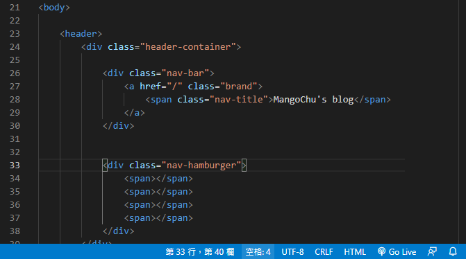
若要將其設為2，則是點選空格後，選擇「使用空格鍵進行縮排」，改為2即可。
修改後再使用VSCode自動縮排（Shift+Alt+F）就會變更了
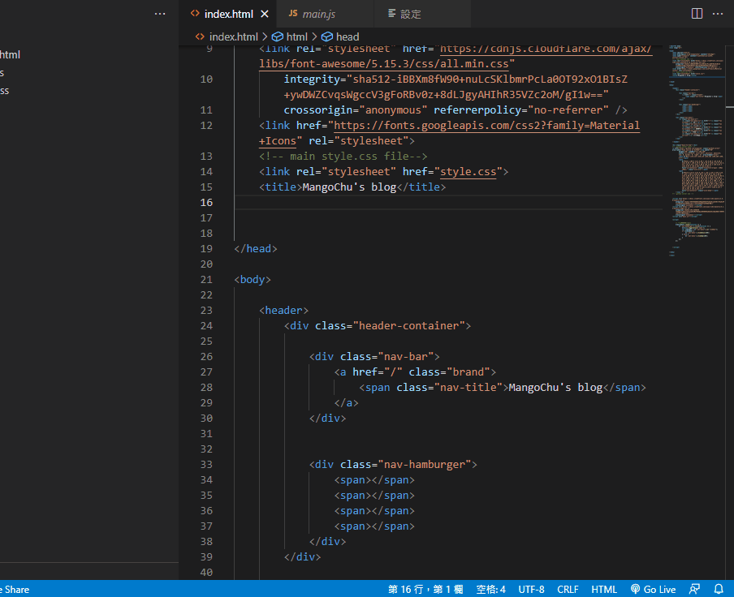
選單設定
另外如果未來不想要每次都要修改縮排設定的話，就到選單設定裡做一些變更：
- 檔案>喜好設定>設定
- 搜尋Tab size並將其值改為2
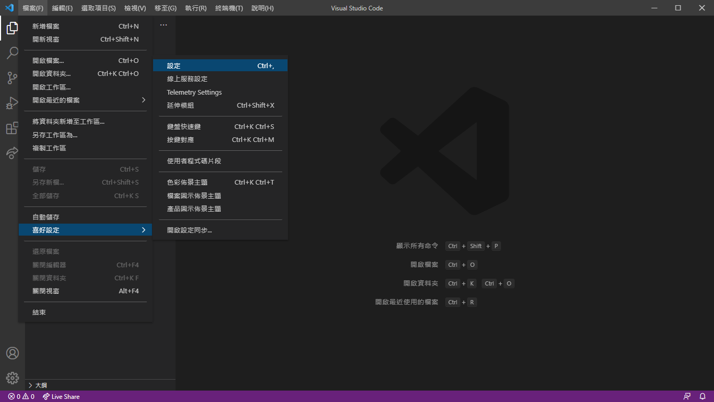
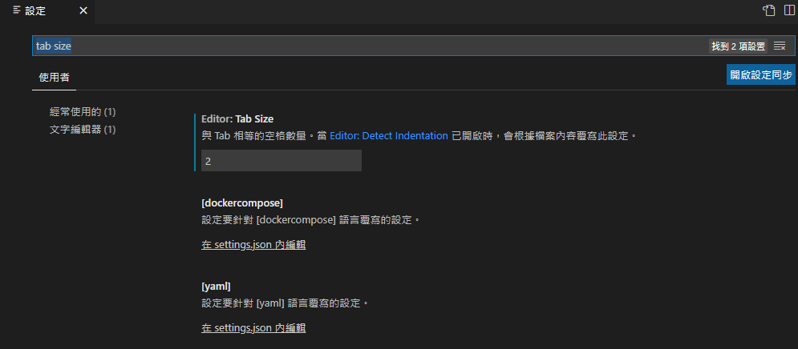
並且把Detect Indentation 取消勾選
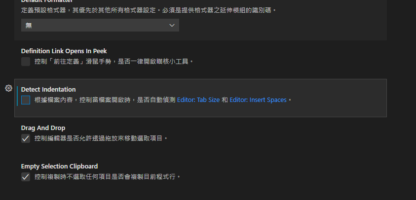
自訂程式碼片段（Snippet）
當我們有重複的程式碼要輸入時，有Snippet可以提升我們Coding的效率。
範例如下：
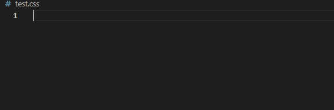
或者我們可以用一個模板讓我們填入自定義值：
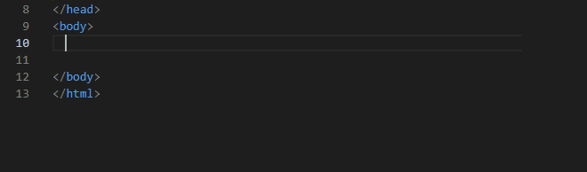
以上範例都是需要自己建立的，不是開啟就有的功能喔！
要建立自己的Snippet首先到檔案>喜好設定>使用者程式碼片段
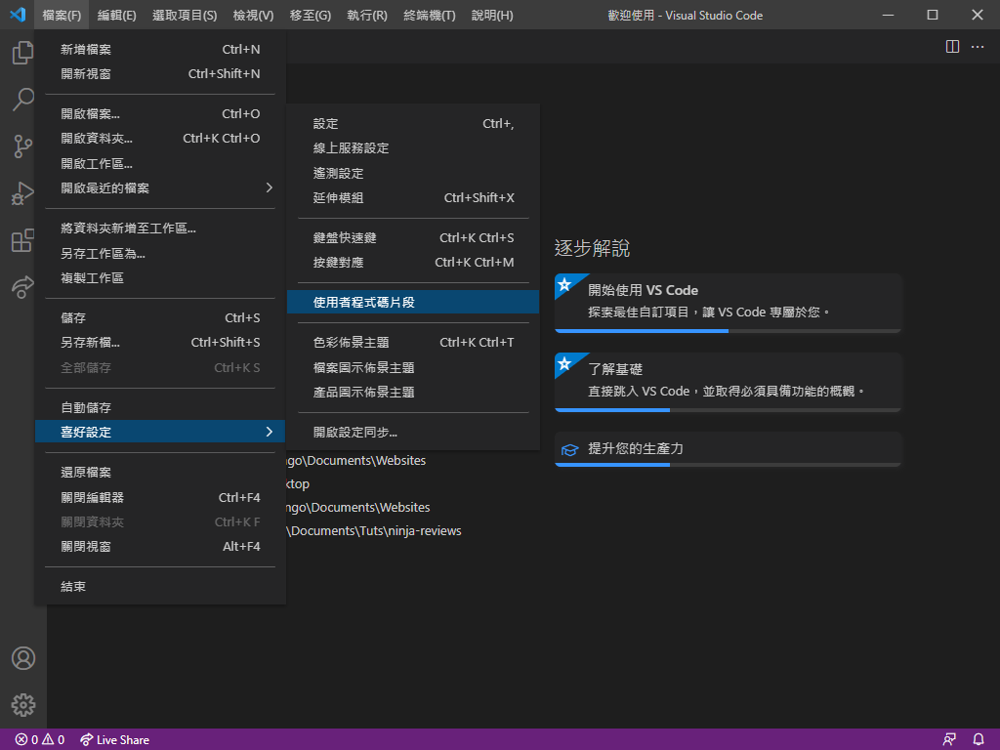
接著可以根據需要的語言進行設定，可以看到我現有的程式碼片段就有2個（css/ html），也可以選擇其他的語言或者全域程式碼片段去設定。
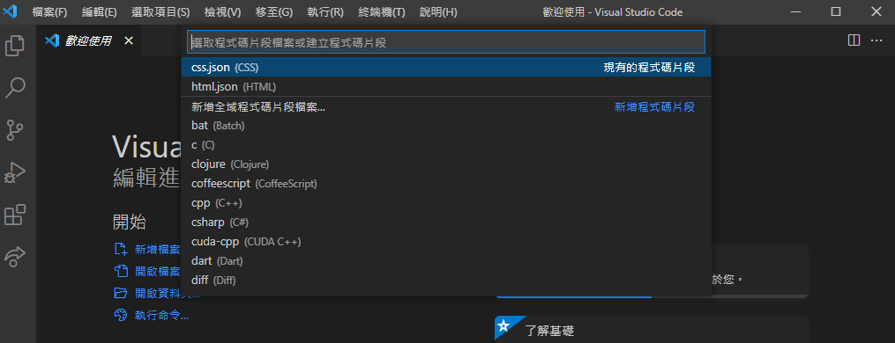
Snippet設定會以json檔案編輯，以下為格式說明：
1 | "//Snippet名稱": { |
其中body裡的設定有幾點說明：
- 用”$”加上數字的組合可以成為特殊字組（例如：
$1,$2），特殊字組所在的區域就是每按1次TAB會停在該區域，可以打上任何值再按TAB跳到下個區域，例如："<img src=\"https://picsum.photos/$1/$2?random=$3\">" - 因為是字串（string），前後必須加上雙引號（”），那問題來了裡面如果又有雙引號就會碰上錯誤，這時候要在裡面的雙引號前面加上倒斜線（
\"），例如："<img src=\"https://picsum.photos/300/400?random=1\">" - body的每一個字串陣列都代表程式碼的一行，換行要記得在每行字串後用逗號（,）隔開，例如：
1 | "* {", |
快速撰寫輔助工具（Emmet） - 使用縮寫換行（wrap with abbreviation）
高手在使用VSCode的時候其實是可以不使用滑鼠完成大部分的程式碼編寫，而且效率比使用滑鼠還高。
這也是多虧了Emmet功能，所以最後要介紹的是Emmet其中一項功能，快速包住程式碼（wrap with abbreviation）
首先說明VSCode有內建功能，當你反白一段字串後可以用輸入引號或大中小括號（’’,””,(),[],{}）快速把反白字串包住。
而現在要介紹的就是進階版功能，用標籤（Tag)把字串快速包住：
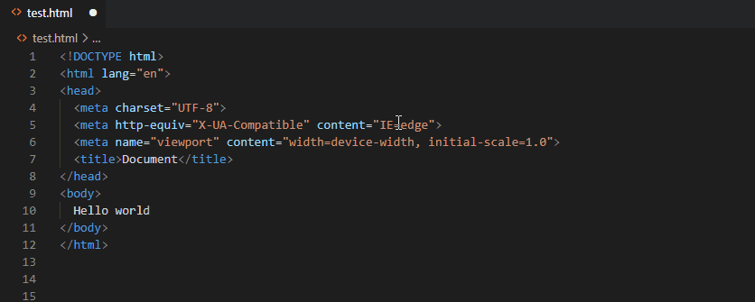
這個其實是使用了工作台的功能Wrap with abbreviation，步驟如下：
Ctrl + Shift + P可以叫出工作台- 輸入wrap with abbreviation按下Enter
- 輸入你想包入的縮寫，就大功告成啦
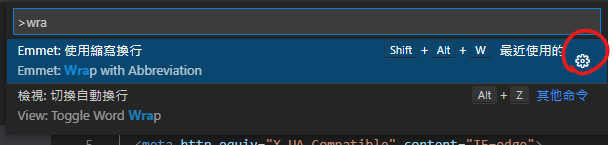
另外如果要做到像我一樣迅速使用，就是要設定快捷鍵。
設定方法就是按下右邊的齒輪，進去後再按編輯鍵設定即可，這邊我是設定Shift + Alt + W
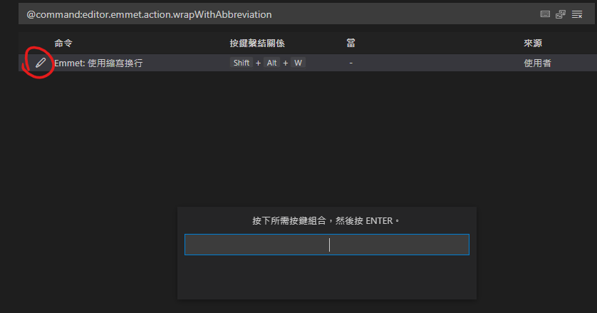
以上文章是我整理的一些實用功能和設定，其實如果平常有空應該多爬爬這類型的文章，應該可以加快不少寫程式碼的速度。
那麼我們下一篇見！